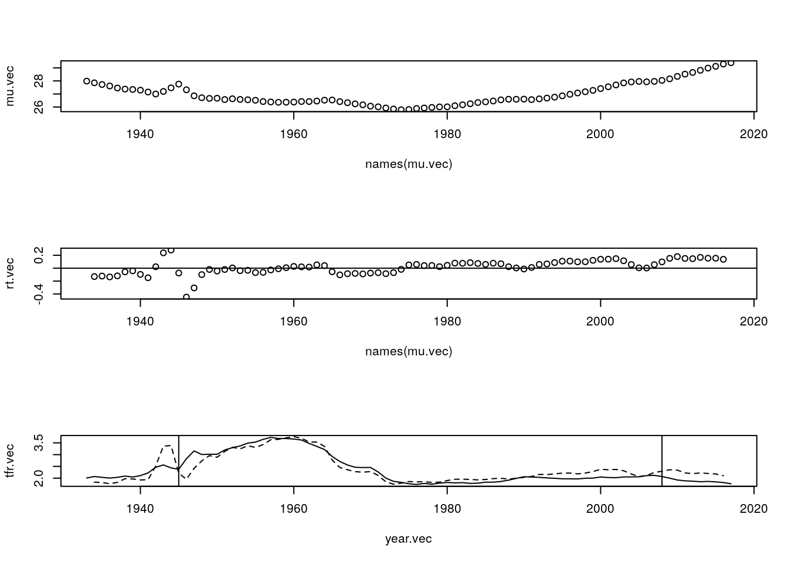
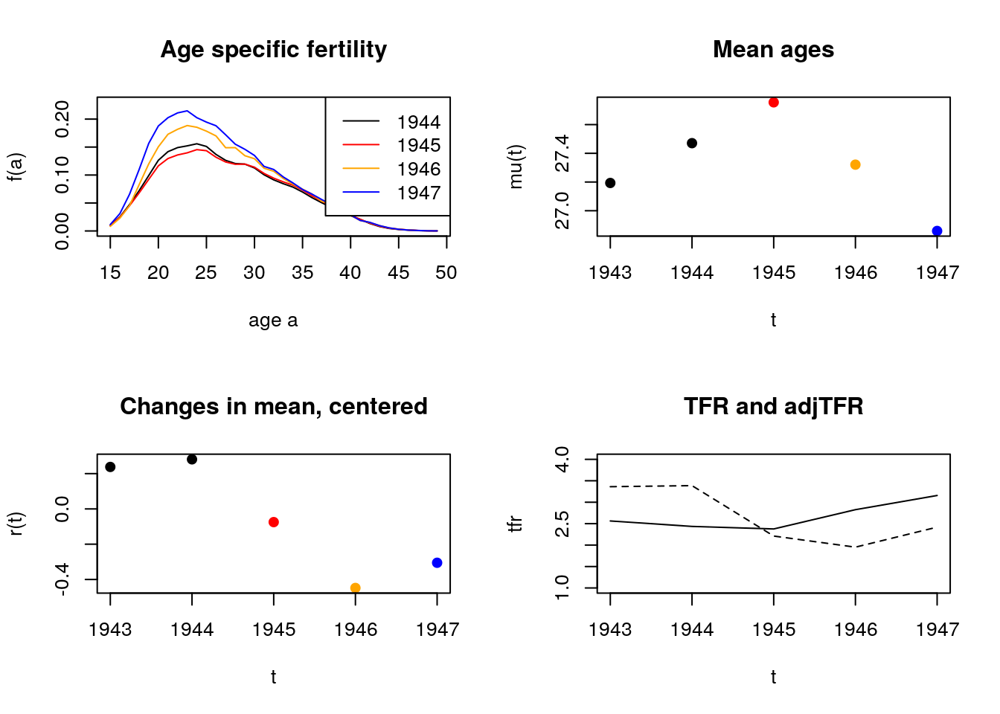

Chapter 7 Tempo
7.1 Outline
- A tempo simulation
- Bongaarts and Feeney’s formula
- An application to the United States
- Two Americas?
- EM algorithm for unmixing mixtures
- An application to two Americas.
7.2 Summary
7.2.1 What we see is superficial. Heterogeneous models reveal what’s ``really’’ going on. (Or do they?)
- Until today, population hazards mislead
- Today, homogeneous fertility misleads
### Wwill reverse perspectives
- We see differences we see in genotypes, in lineages, in names.
- These could be due to ``real’’ differences (heterogeneity).
- But they could also be due to luck. Everyone is the same but stochastic outcomes differ.
Our models of individual-level randomness will have predicted dynamics, which are themselves interesting but can also be used as a ``null’’ to compare to observations. ## Fertility postponement, a very simple example Baseline
- A population has a history of 1 birth per day
- When women turn age 25, they have a daughter.
This gives us a constant stream of births, 365 per year.
Postponement
- Starting on Jan. 1, 020, everyone postponements childbearing an additional month, until they are aged 25 1/12.
- How many births will there be in 2020?
- How many births in 2021?
7.2.2 Continuous postponement, a shiny simulation
- [\(R(t)\)] Cumulative postponment -[\(r(t)\)] Incremental postponement \(r(t) = R'(t)\)
What is a formula for recovering original birth stream? \[ \hat{B}_{orig} = B_{obs} \times (1 + R'(t)) \] or \[ \hat{B}_{orig} = B_{obs} \times 1/ \left[1 - R'(t)\right]? \]
Note: this idea of ``recovering original’’ is one way to think about tempo adjustment.
A bigger microsimulation
- Each period will have births across a range of ages
- We’ll randomly generate the original planned birthdays
- Then we’ll shift by a continuous function \(R(t)\).
7.3 Period Shifts: Bongaarts and Feeney’s model
\[ f(a,t) = f_0(a - R(t)) (1- R'(t)) q(t) \]
-[\(f(a,t)\)] birth rate of women aged \(a\) in period \(t\) -[\(f_0\)] A constant baseline schedule (can be norm’d to sum to 1). -[\(q(t)\)] A period intensity parameter: ``quantum’’ -[\(R(t)\)] Cumulative shift.
7.3.1 An example
\[ f(a,t) = f_0(a - R(t)) (1- R'(t)) q(t) \]
- \(R_{2019} = 3\)
- \(R'_{2019} = .1\)
- \(q(2019) = 1\)
Give an expression for \(f(28,2019)\).
7.4 A derivation: due to Rodriguez
Assume no quantum effects.
Take a cohort with cumulative fertility \[ F_0(a) = \int_0^a f(x) \,dx \]
Now put in shifts so that observed fertility is from an
age \(R(t)\) years . (28'' is the new25’’!)
\[
F(a,t) = F_0(a - R(t)) \pause = F_0(a - R(c + a))
\]
Differentiate with respect to age (which for a cohort is also time \(t\)), using chain rule
\[ f(a,t) = f_0(a - R(t)) \left[1 - R'(t)\right] \] Bingo!
7.4.1 Quantum comes at the end
Let’s re-notate our constant quantum result \[ f_0(a,t | R(t) ) = f_0(a - R(t)) \left[1 - R'(t)\right] \] Then we can incorporate period quantum on the shifted surface: \[ f(a,t) = f_0(a,t | R(t) ) q(t) = f_0(a - R(t)) \left[1 - R'(t)\right]q(t) \]
Note: If we vary quantum shifts, then \(q(t)\) will bleed into neighboring years. (a small effect, but makes model messier).
7.4.2 Tempo-adjusted TFR: counter-factual, TFR in absence of timing changes
\[ TFR(t) = \int_0^\infty f(a,t) \, da \]
Substituting our shifted birth rates with quantum \[ TFR(t) = \int_0^\infty f_0(a - R(t)) \left[1 - R'(t)\right]q(t) \] gives?
\[ TFR(t) = TFR_0 \left[1 - R'(t)\right] q(t) \] WLG, define \(TFR_0 = 1\), then \[ q(t) = \alert{ {TFR(t) \over 1 - R'(t)} \equiv TFR^*(t) } \] Voila, the BF formula
7.4.3 How do period schedules change?
For homework \[ f(a,t) = f_0(a - R(t)) \left[1 - R'(t)\right] \]
What does \[ {\partial \over \partial t} \log f(a,t) = ? \] Let’s sketch
7.5 Uniform'' shifts - BF model assumes all ages shift by $R(t)$. - BF model assumes all ages rise or fall by same quantum $q(t)$ - Violating these assumptions means change in mean age will not just reflecttempo’’.
- Example: What happens if people have fewer higher order births?
7.6 BF recommendation for achieving uniformity
Separate estimates for each birth order, and then combine: \[ TFR^*(t) = \sum_i TFR_i^*(t) = \sum_i {TFR_i(t) \over 1 - r_i(t)} \]
This will protect against order-specific quantum effects.
7.7 An Application to the United States
- We’ll use HFD data
- We’ll do tempo adjustment for all births
- We’ll redo by birth order
## Tempo adjustment of US fertility using HMD data and
## Bongaarts-Feeney formula
library(data.table)
source("/hdir/0/fmenares/Book/bookdown-master/codes/tempo_functions.R")
source("/hdir/0/fmenares/Book/bookdown-master/codes/utility_functions.R")
## (1) read in data and format into an array
## (2) fit bongaarts feeney without birth order
## (3) fit bongaarts feeney with birth order
## (1) read in data and format into an array
## age specific fertility rates by birth order for all countries and times
## RR means "rectangles" on Lexis surface
dt <- fread("/hdir/0/fmenares/Book/bookdown-master/data/zip_w/asfrRRbo.txt")
dt <- dt[Code == "USA"] ## keep only US
## keep only ages 15 to 49
dt <- dt[Age %in% 15:49]
print(dt)## Code Year Age ASFR ASFR1 ASFR2 ASFR3 ASFR4 ASFR5p
## 1: USA 1933 15 0.00672 0.00647 0.00025 0.00000 0.00000 0.00000
## 2: USA 1933 16 0.01875 0.01744 0.00121 0.00009 0.00000 0.00000
## 3: USA 1933 17 0.03846 0.03337 0.00464 0.00038 0.00005 0.00002
## 4: USA 1933 18 0.06586 0.05150 0.01256 0.00154 0.00021 0.00004
## 5: USA 1933 19 0.08719 0.05946 0.02249 0.00446 0.00064 0.00014
## ---
## 2971: USA 2017 45 0.00189 0.00048 0.00045 0.00032 0.00023 0.00041
## 2972: USA 2017 46 0.00102 0.00028 0.00026 0.00016 0.00012 0.00019
## 2973: USA 2017 47 0.00059 0.00019 0.00015 0.00009 0.00005 0.00010
## 2974: USA 2017 48 0.00029 0.00010 0.00008 0.00004 0.00002 0.00005
## 2975: USA 2017 49 0.00023 0.00008 0.00005 0.00004 0.00002 0.00003## put all order fertiility into a matrix
fat <- dt[, xtabs(ASFR ~ Age + Year)]
fat <- as.matrix(unclass(fat)) ## may cause problems, we'll see
fat1 <- dt[, xtabs(ASFR1 ~ Age + Year)]
fat2 <- dt[, xtabs(ASFR2 ~ Age + Year)]
fat3 <- dt[, xtabs(ASFR3 ~ Age + Year)]
fat4 <- dt[, xtabs(ASFR4 ~ Age + Year)]
fat5p <- dt[, xtabs(ASFR5p ~ Age + Year)]
year.vec <- colnames(fat)
age.vec <- rownames(fat)
parity.vec <- c("all", 1:5)
fat.array <- array(NA, dim = c(nrow(fat), ncol(fat), length(parity.vec)))
dimnames(fat.array) <- list(age.vec, year.vec, parity.vec)
fat.array[,,"all"] <- fat
fat.array[,,"1"] <- fat1
fat.array[,,"2"] <- fat2
fat.array[,,"3"] <- fat3
fat.array[,,"4"] <- fat4
fat.array[,,"5"] <- fat5p
## (2) fit bongaarts feeney
tfr.vec <- colSums(fat)
## (2a) by hand
mu.vec <- apply(fat, 2, get.mean)
rt.vec <- center.diff(mu.vec)
adj.tfr.vec <- tfr.vec / (1 - rt.vec)
par(mfrow = c(3,1))
plot(names(mu.vec), mu.vec)
plot(names(mu.vec), rt.vec)
abline(h =0)
plot(year.vec, tfr.vec, type = "l")
lines(year.vec, adj.tfr.vec, lty = 2)
abline(v = c(1945, 2008))
## we see fertility since 1980 has been depressed by postponment
## we see weird dynamics around end of WW2 and great recession.
## what's going on?
par(mfrow = c(1,1))
plot(year.vec, tfr.vec, type = "l")
lines(year.vec, adj.tfr.vec, lty = 2)
abline(v = c(1945, 2008))
abline(h = seq(1.5, 2.5, .1), col = "grey", lty = 3)
## can also use function to fit
adj.tfr.vec.from.fun <- bf.fit.simple(fat)$tfr.star
lines(year.vec, adj.tfr.vec.from.fun, col = "red")
## Now let's look at turbulence around WW2
par(mfrow = c(2,2))
plot(age.vec, fat[,"1944"], type = "l", ylim = c(0, .23),
ylab = "f(a)",
xlab = "age a"
)
lines(age.vec, fat[,"1945"], type = "l", col = "red")
lines(age.vec, fat[,"1946"], type = "l", col = 'orange')
lines(age.vec, fat[,"1947"], type = "l", col = "blue")
legend("topright",
legend = 1944:1947,
col = c("black", "red", "orange", "blue"),
lty = 1)
title("Age specific fertility")
##
plot(1943:1947, mu.vec[paste(1943:1947)],
ylab = "mu(t)",
xlab = "t",
col = c("black", "black", "red", "orange", "blue"),
pch = 19)
title("Mean ages")
##
plot(1943:1947, rt.vec[paste(1943:1947)],
ylab = "r(t)",
xlab = "t",
col = c("black", "black", "red", "orange", "blue"),
pch = 19)
title("Changes in mean, centered")
##
plot(1943:1947, tfr.vec[paste(1943:1947)],
ylab = "tfr",
xlab = "t",
ylim = c(1, 4),
type = "l")
lines(1943:1947, adj.tfr.vec[paste(1943:1947)],
lty = 2)
title("TFR and adjTFR")
## From 1945 to 1946, fertility goes up a lot, but more at younger
## ages. So mean goes down. BF adjustment over-compensates, and has
## quantum declining.
## What's happening from 1944-45?
## (3) fit bongaarts feeney with birth order
out <- bf.fit(fat.array)
adj.tfr.bo.vec <- out$tfr.star.out[, "bf.tfr.star"]
## pdf("usa_tempo_fig.pdf")
par(mfrow = c(1,1))
plot(year.vec, tfr.vec, type = "l", lwd = 2)
lines(year.vec, adj.tfr.vec, lty = 2)
lines(year.vec, adj.tfr.bo.vec, lty = 1, lwd = 2, col = "red")
## let's check against hfd
hfd.adj.dt <- fread("/hdir/0/fmenares/Book/bookdown-master/data/zip_w/adjtfrRR.txt",
skip = 2)
hfd.adj.dt <- hfd.adj.dt[Code == "USA"]
hfd.adj.dt[, points(Year, adjTFR, col = "red", cex = .8)]## NULLlegend("topright",
c("tfr", "tfr* (all parities)", "tfr* (by parity)"),
col = c("black", "black", "red"),
lty = c(1, 2, 1),
lwd = c(2,1,2))
hfd.adj.dt[, lines(Year, filter(adjTFR, rep(1/7, 7)), col = "red", lwd = 4)]
## NULL## dev.off()
## Q. Does taking birth order into account smooth WW2 turbulence?
## Q. Does taking birth order into account smooth Recession turbulence?
## Q. Does taking birth order into account, retell the baby boom?
## Q. Does taking birth order into account, retell the baby bust?- Baby boom smaller if we account for ``pre-ponement’’.
- Fertility lull in 1970s and 80s disappears if we account for ``postponement’’
- Birth order disaggregation improves estimates of shifts from changes in mean age
- What happened with the recession?
7.8 Two Americas
Let’s look at births (all orders).
fat_movie.pdf
Let’s look at 1st births, again as if their are two latent groups: \(A\) and \(B\). (These could be
early moms'' /late moms’’, non-college / college, pre-marital / marital, lower-class / upper class, \(\ldots\))fat_mix_movie.pdf
## mixtools package, version 1.2.0, Released 2020-02-05
## This package is based upon work supported by the National Science Foundation under Grant No. SES-0518772. ## simulate 2 normals
N <- 1000
x1 <- rnorm(N, mean = 22, sd = 3) ##
x2 <- rnorm(2*N, mean = 30, sd = 4)
## combine them
x <- c(x1,x2)
## use EM to infer mixture
out <- normalmixEM(x,
lambda = c(.5, .5),
mu = c(15, 35),
sigma = c(5,5))## number of iterations= 489## [1] 22.67040 30.49742## [1] 3.301363 3.801764## [1] 0.4032589 0.5967411Seems to work great.
ages <- 10:49
dens1 <- dnorm(x = ages, mean = out$mu[1], sd = out$sigma[1]) * out$lambda[1]
dens2 <- dnorm(x = ages, mean = out$mu[2], sd = out$sigma[2]) * out$lambda[2]
par(mfrow = c(1,1))
hist(x, probability = T, col = "grey")
lines(ages, dens1, col = "red", lwd = 2)
lines(ages, dens2, col = "blue", lwd = 2)
lines(ages, dens1 + dens2, col = "black", lwd = 2)
7.8.1 An algorithm for tempo adjustment of mixtures
- Fit normal mixture to each year.
- Refit using constant variance (average). This assures shape invariance of each component, fulfilling BF assumption.
Estimate BF separately for \(A\) and \(B\), and combine.
tempo_mixed_results_figure.pdf
Identifiability?
% could do with 3 sub-populations?
7.9 Conclusions
- Postponement dilutes period births, lowers TFR
- Tempo-adjustment tries to ``put births back in’’
- Changes in mean work fine if ``shape’’ doesn’t change
- Shape can change through heterogeneity
- With strong assumptions, we can identify heterogeneity
- Declining quantum for young and postponement for old appears to be the story
7.9.1 Caveats
- Who are these latent groups? Do you start out in one and end up in the other? Do you stay in one your whole life?
- How do we project forward?
- Can we use other indicators (e.g., social class, education, marriage) to get same results?